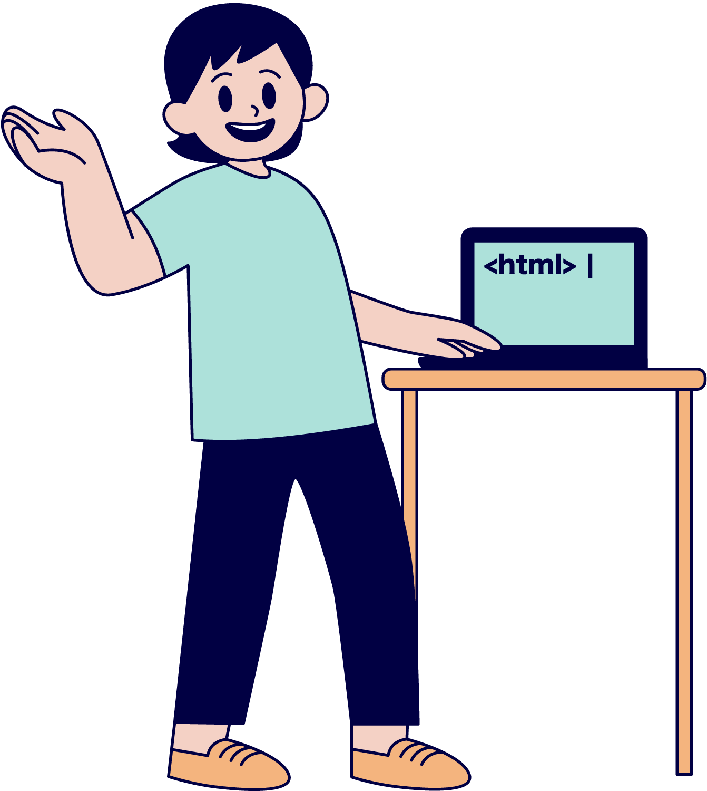
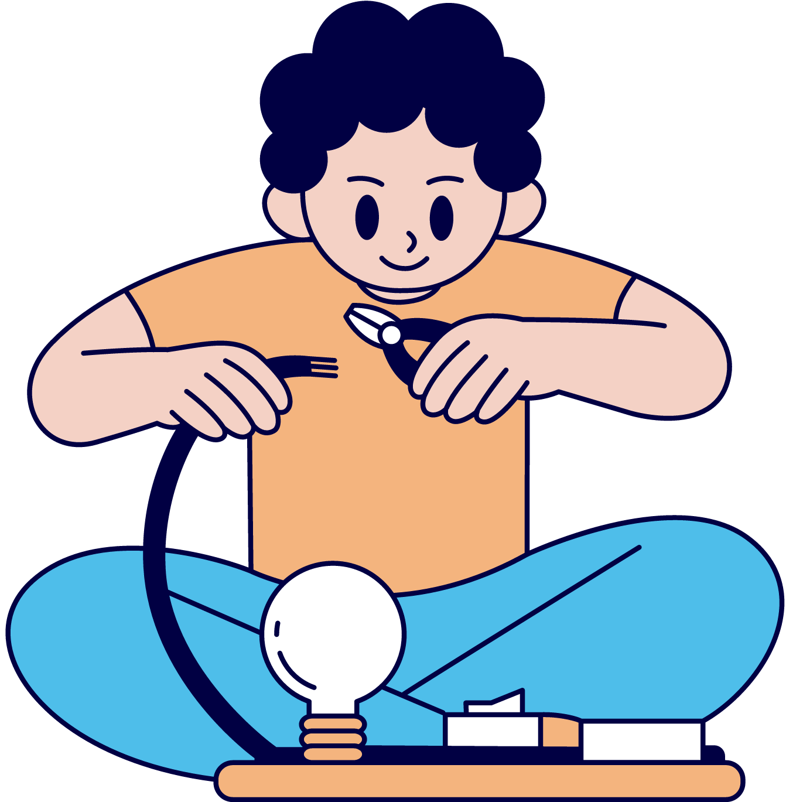
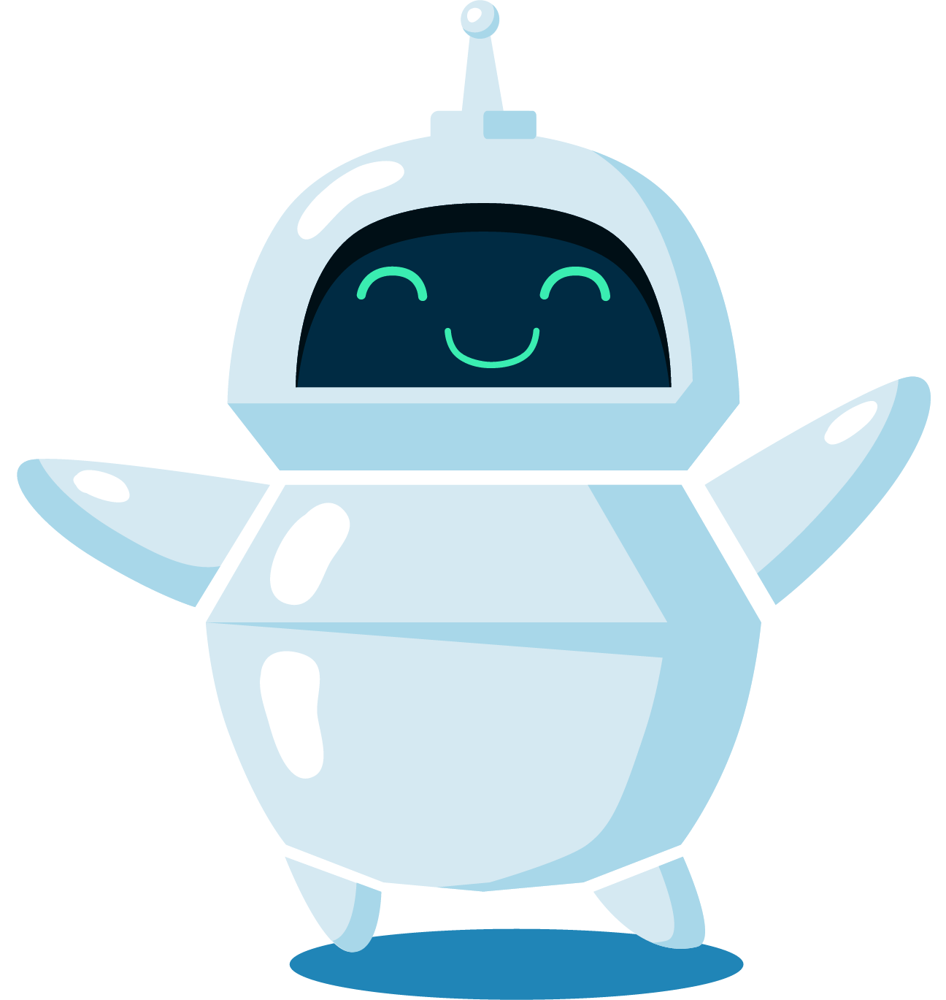
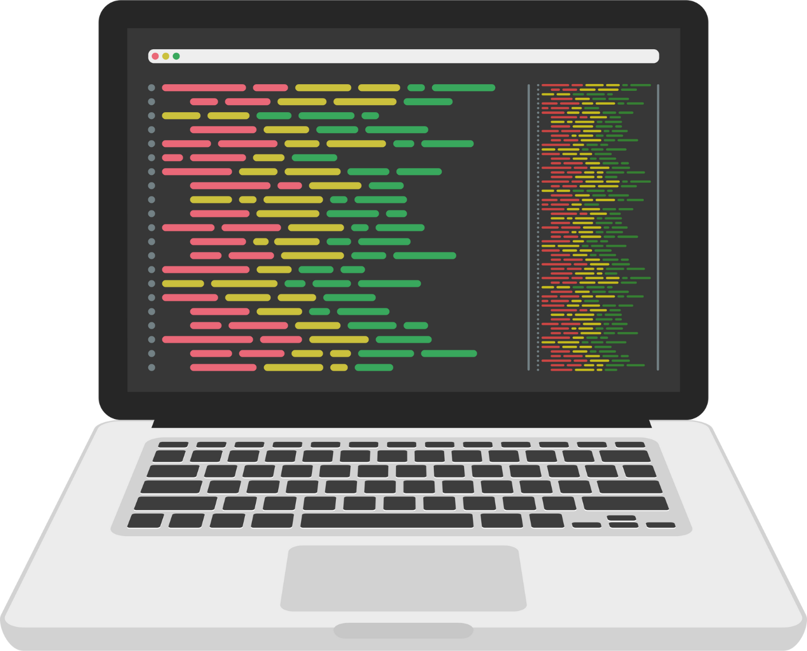
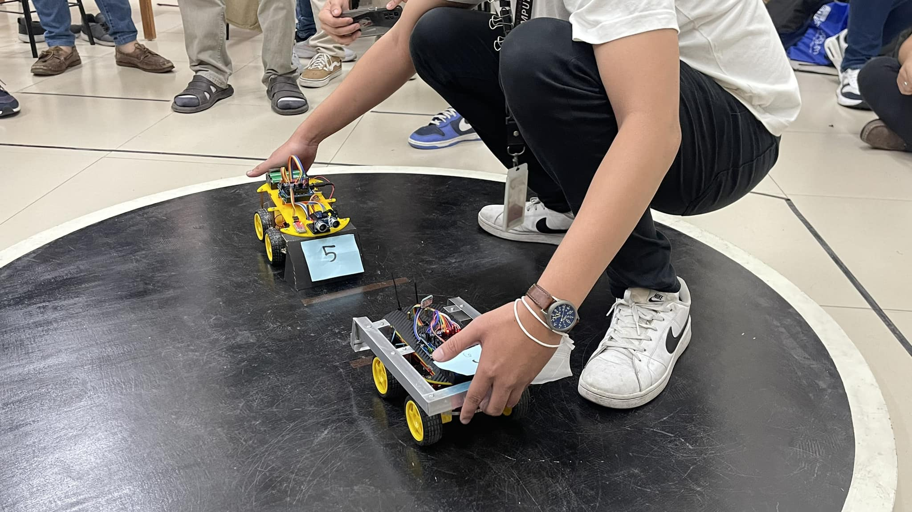
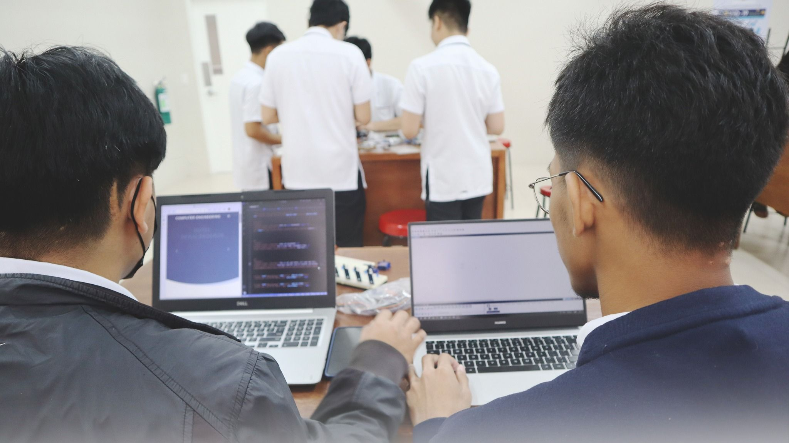

BS Computer Engineering
University of the East - Manila
Where AI and future begins


What is BS CpE?
BS CpE (Bachelor of Science in Computer Engineering) is a four-year engineering program that embodies the science and technology
of design, development, implementation, maintenance, and integration, of software and hardware components in modern computing
systems and computer controlled equipment.
Our Specializations
Explore our wide range of specializations in our course track:

Embedded Systems
Artifical Intelligence (AI)
Machine Learning (ML)
Internet of Things (IOT)
Artifical Intelligence (AI)
Machine Learning (ML)
Internet of Things (IOT)

Software Development
Web & Mobile Development
Python | Java | C++
HTML | CSS | JS
Web & Mobile Development
Python | Java | C++
HTML | CSS | JS
Computer Networks
CCNA & CCNP Tracks
CCNA & CCNP Tracks
What We Do
Check out some of our recent projects and see the quality of our work. We take pride in delivering projects that look great and perform exceptionally.

Arduino Projects
An Arduino project typically involves using an Arduino microcontroller to create various electronic systems and devices.
Arduino is an open-source hardware and software platform that is popular for its ease of use and versatility.

Robotics Project
Robotics is a multidisciplinary field that involves the design, construction, programming, and operation of robots.
Robots are automated machines or devices capable of performing tasks with varying degrees of autonomy.

Software and Networking Projects
A software and networks project typically involves the development, implementation, and management of computer software and network systems.
It focuses on creating applications, software solutions, or network infrastructure to address specific needs or challenges.
About the Department
The Department of Computer Engineering declares its role to produce competitive engineers who are knowledgeable in the fundamental areas of digital and computer system design, software development, and modeling of physical systems.
The Department of Computer Engineering will impact the information age as a national leader in computing, research, and education.
After three to five years from graduation, the Computer Engineering alumni shall:
1. Have pursued advancement towards becoming globally competitive leaders in their chosen field of practice.
2. Be a contributor to the development of a progressive society, guided by the UE core values of Excellence, Integrity, Professionalism, Teamwork, Commitment, Transparency, Accountability, and Social Responsibility.
1. Have pursued advancement towards becoming globally competitive leaders in their chosen field of practice.
2. Be a contributor to the development of a progressive society, guided by the UE core values of Excellence, Integrity, Professionalism, Teamwork, Commitment, Transparency, Accountability, and Social Responsibility.
A. Apply knowledge of mathematics, science, and engineering.
B. Design and conduct experiments, as well as to analyze and interpret data.
C. Design a system, component, or processes to meet desired needs within realistic constraints.
D. Function on multi-disciplinary teams.
E. Identify, formulate, and solve engineering problems.
F. Have an understanding of professional and ethical responsibilities.
G. Communicate effectively in both Filipino and English languages.
H. Have an understanding of the impact of engineering solutions in a global and societal context.
I. Recognize the need for, and an ability to engage in life-long learning.
J. Apply knowledge of contemporary issues.
K. Use techniques, skills, and modern engineering tools necessary for the practice of computer engineering.
L. Apply knowledge and understanding of engineering and management principles as a member and leader in a team to manage projects and in multidisciplinary environments.
M. Understand at least one specialized field of computer engineering practice.
B. Design and conduct experiments, as well as to analyze and interpret data.
C. Design a system, component, or processes to meet desired needs within realistic constraints.
D. Function on multi-disciplinary teams.
E. Identify, formulate, and solve engineering problems.
F. Have an understanding of professional and ethical responsibilities.
G. Communicate effectively in both Filipino and English languages.
H. Have an understanding of the impact of engineering solutions in a global and societal context.
I. Recognize the need for, and an ability to engage in life-long learning.
J. Apply knowledge of contemporary issues.
K. Use techniques, skills, and modern engineering tools necessary for the practice of computer engineering.
L. Apply knowledge and understanding of engineering and management principles as a member and leader in a team to manage projects and in multidisciplinary environments.
M. Understand at least one specialized field of computer engineering practice.
The Society of Computer Engineering Students Organization

We are the Computer Engineers! To know more about our organization, please click the link down below.
Join Now!